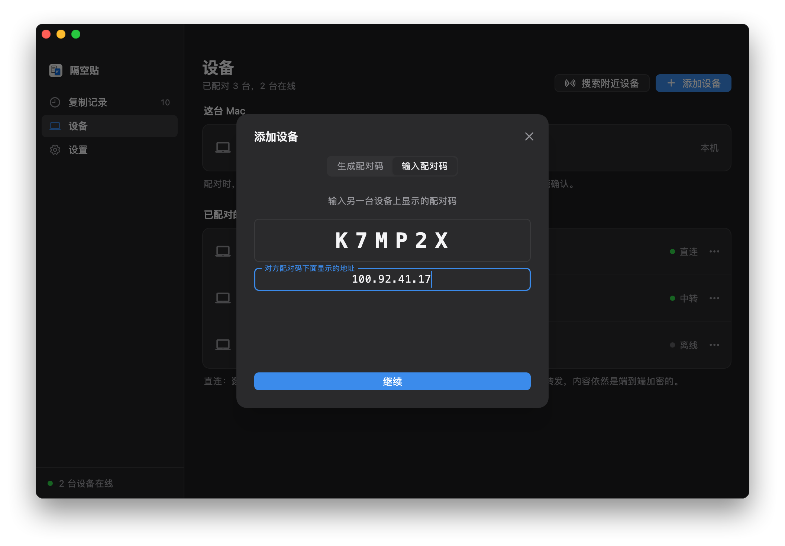

像在同一个局域网里
Tailscale 是一个组网工具：装了它、登录同一个账号的设备，各自分到一个固定的 100 开头的地址，不管实际在哪个网络里，都能用这个地址互相访问。隔空贴配对时记住对方的这个地址，之后就像在同一个网络里一样直接连接。
- 不需要服务器，也不需要一直开着的电脑：两台电脑开着、连着 Tailscale，就能同步。
- 地址只输入一次。Tailscale 地址不会变，配对时输入一次，之后两台会自动找到彼此。
- 两层加密。Tailscale 的 WireGuard 隧道里，跑的是隔空贴自己端到端加密的连接，Tailscale 看不到内容。
开始之前
- 一个 Tailscale 账号
- 个人使用免费，用 Google、Microsoft、GitHub 或 Apple 账号就能登录。所有设备登录同一个账号。
- 每台电脑都装 Tailscale
- Windows、macOS、Linux 都有客户端。用隔空贴的电脑都要装，并保持连接。
- 隔空贴已经装好
- 每台电脑装好 App、启用了后台同步，见快速开始。服务器地址留空就行。
- 用 ZeroTier 也行
- 其他能给每台设备分配固定虚拟地址的组网工具，做法相同：配对时输入它分配的地址。下面以 Tailscale 为例。
第 1 步
在每台电脑上装 Tailscale
每台要同步的电脑，都装上并登录同一个账号。
- 到 Tailscale 官网下载对应系统的客户端并安装。Linux 上运行
curl -fsSL https://tailscale.com/install.sh | sh，再运行sudo tailscale up，打开它给出的链接登录。 - 打开 Tailscale，登录。每台电脑都用同一个账号。
- 登录后，在 Tailscale 的管理后台能看到所有设备，每台都有一个 100 开头的地址。
| 设备 | Tailscale 地址 | 系统 |
|---|---|---|
| macbook-pro | 100.88.20.5 | macOS |
| home-pc | 100.92.41.17 | Windows |
让 Tailscale 一直连着
- Windows：在任务栏右下角的 Tailscale 图标上右键，在「Preferences」里勾选「Run unattended」，注销之后也保持连接。
- Mac：确认 Tailscale 登录后会自动打开。
- 关掉密钥过期：Tailscale 默认每 180 天要求设备重新登录一次。常年不动的电脑，可以在管理后台的 Machines 页面，点那一行最右边的菜单，选「Disable key expiry」。
第 2 步
查对方的 Tailscale 地址
在要配对的另一台电脑上点 Tailscale 的图标（Mac 在菜单栏，Windows 在任务栏右下角），菜单里能看到本机的地址；或者在终端里运行 tailscale ip -4。
> tailscale ip -4 100.92.41.17
下面以家里那台 Windows 的 100.92.41.17 为例，换成你的地址。
第 3 步
配对时输入这个地址
和在同一网络里配对一样，只是多输入一个地址。
- 在家里那台 Windows 上打开「设备」，点「添加设备」，记下 6 位配对码。
- 在公司的 Mac 上点「添加设备」，切到「输入配对码」，输入它；再点「不在同一网段？」，填上
100.92.41.17，点「继续」。 - 两块屏幕会显示同样的两行安全指纹，逐字核对一致后确认。之后两台在哪儿都能同步。

两台都在家里时，隔空贴也会在局域网里直接找到对方，数据不会绕道。
常见问题
设备之间显示「直连」，速度却很慢？
隔空贴显示的「直连」，指两台电脑在 Tailscale 的虚拟网里直接相连。Tailscale 自己打不通两台电脑时，会经它在境外的中转服务器（DERP）转发，在国内用就会慢。
在终端里运行 tailscale ping 对方的地址：显示 via DERP，说明 Tailscale 在中转；显示 via 一个 IP 和端口，就是点对点。公司网络、校园网比较容易遇到中转，可以自建 DERP 中转服务器，或者换一种组网工具。
配对时找不到对方？
先确认两台的 Tailscale 都已连接：在终端里运行 tailscale ping 对方的地址，能 ping 通再试。
能 ping 通还找不到，多半是对方的防火墙挡住了：对方是 Windows 的话，在它的隔空贴「设置 → 局域网」里点「放行」；是 Mac 的话，确认「系统设置 → 隐私与安全性 → 本地网络」里打开了 PasteFerry Daemon。
一定要每台电脑都装 Tailscale 吗？
是的，没装的电脑访问不到 100 开头的地址。两台在同一个网络里时，不装也能用，见同一网络教程。
以前照教程在家里装过服务器，还要它吗？
不需要了。在每台电脑的「设置」里清空服务器地址，再在家里那台电脑上卸载服务器即可，已经配对的设备不用重新配对。留着也没关系，服务器和 Tailscale 可以同时用。
Tailscale 能看到我复制的内容吗？
不能。Tailscale 的连接用 WireGuard 端到端加密，里面跑的又是隔空贴自己的 DTLS 加密连接，两层都只有两台电脑能解开。Tailscale 的服务器只交换设备的公钥和地址，中转服务器也只转发加密后的数据包。
Tailscale 地址会变吗？
一般不会。地址跟着设备走，重启、换网络都不变；只有把设备从 Tailscale 里删掉再重新加入，才会换一个。换了的话，在「设备」里给那台设备重新输入一次地址。
我有公网服务器，还需要 Tailscale 吗？
不需要。把服务器部署在有公网 IP 的机器上，所有电脑填它的地址就行，见公网服务器部署教程。